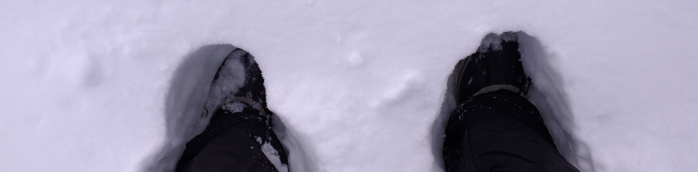

L'hiver08 janvier 2017
C'est le pied total !
Neige en abondance
Ici, quand il neige, ça ne fait pas semblant !
Il peut en effet tomber 20 centimètres en seulement quelques heures.
Et c'est vraiment très joli Montréal à cette époque, avec les escaliers partout pleins de neige.
Températures
Les températures oscillent à cette période entre -20/-25 et +5 degrés.
Généralement il fait autour de -10 degrés. Jusqu'à -10, je n'ai pas plus froid qu'à Toulouse en hiver quand il faisait +5. L'air est en effet beaucoup plus sec, c'est donc nettement plus agréable.
Et puis on est très bien équipés (bonnet bien chaud, doudoune épaisse, bottes chaudes, gants et tout le tralala).
À partir de -20 c'est très marrant car ça gèle dans la barbe et vous entendez crépiter dans le nez !
Le seul moment où c'est compliqué, c'est s'il y a du vent, car là vous les sentez les "- beaucoup" !
La vie l'hiver
Pas question de rester cloîtré chez soi, que nenni ! La vie ne s'arrête pas d'un poil ici l'hiver.
Les gens sortent, vivent, les enfants s'en donnent à coeur joie dans les parcs avec toute cette neige, les restaus sont bondés comme pendant les autres saisons.
Bref, il y a de la vie, et c'est très agréable finalement.
Il y a plein d'activités à faire, les parcs se transforment en pistes pour patiner ou en stades de hockey, etc.
Une incroyable organisation
Les trottoirs et routes sont en permanence déneigés.
Pour les trottoirs, il y a des minis chasse-neige qui passent dès que la neige tombe (ils roulent comme des porcs, attention danger !).
Plus du sel, des petits graviers (pour éviter de glisser car il peut verglacer ou simplement il reste toujours un peu de neige qui finit par durcir et être glissante).
Un vrai régal pour les appartements tout ça !
Pour les routes, cela se fait en trois étapes, et c'est juste hallucinant à voir :
Etape 1 : une première voiture passe en bipant très fort pour annoncer le déneigeage et de dégager les voitures (sinon, ils la remorquent et la stationnent dans une rue à côté)
Etape 2 : des chasse-neige passent pour faire un tas propre de neige
Etape 3 : une machine aspire la neige pour la mettre dans un énorme camion-benne ; dès qu'il est rempli, un autre (qui faisait la queue avec d'autres) prend le relais
J'ai mis des vidéos sur Facebook, n'hésitez pas à me demander pour les non-facebookien(ne)s.
Spa
Samedi soir dernier j'ai fait un super Spa avec une amie (le bota bota).
C'est sur un bateau, grande classe, des saunas / bains vapeurs / bassins extérieurs d'eau chaude, le tout avec une super vue du centre de Montréal !
Et par -15 c'est vraiment une super expérience (quand on sort de l'eau bouillante, on fume de partout, et étrangement on n'a pas du tout froid... les 30 premières secondes)
Nous avons même eu le droit à une belle vue sur un feu d'artifice tiré juste à côté :)
Rando raquette
Le week-end prochain, c'est rando raquette avec des amis en dehors de Montréal !
... Le saviez-vous ?
- La marque Marlboro s'appelle Rooftop au Canada (car déjà prise !)
- Une soirée s'appelle un parté (de l'anglais party)
- On ne dit pas piocher (une carte), mais piger
- Un plaid s'appelle un jeté (j'adore ce nom, il prend tout son sens quand tu te vautres dans le canapé)
- La neige boueuse (la gadoue) s'appelle la slush (anglicisme !)
- On ne dit pas yaourt mais yogourt
- Le mot "achalandé" est très employé (vieux français voulant dire fréquenté)